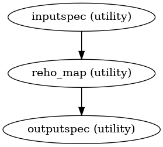
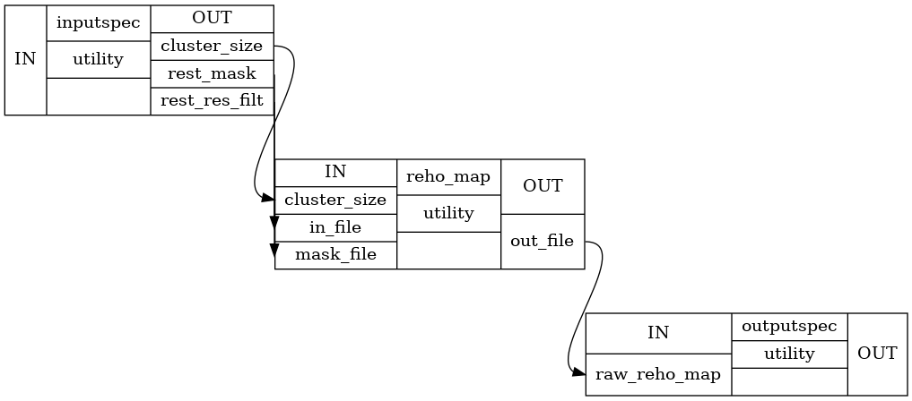

Regional Homogeneity Approach to fMRI data analysis¶
- CPAC.reho.compute_reho(in_file, mask_file, cluster_size)[source]¶
Computes the ReHo Map, by computing tied ranks of the timepoints, followed by computing Kendall’s coefficient concordance(KCC) of a timeseries with its neighbours
- Parameters
- in_filenifti file
4D EPI File
- mask_filenifti file
Mask of the EPI File(Only Compute ReHo of voxels in the mask)
- cluster_sizeinteger
for a brain voxel the number of neighbouring brain voxels to use for KCC.
- Returns
- out_filenifti file
ReHo map of the input EPI image
- CPAC.reho.create_reho(wf_name)[source]¶
Regional Homogeneity(ReHo) approach to fMRI data analysis
This workflow computes the ReHo map, z-score on map
- Parameters
- None
- Returns
- reHoworkflow
Regional Homogeneity Workflow
Notes
Workflow Inputs:
inputspec.rest_res_filt : string (existing nifti file) Input EPI 4D Volume inputspec.rest_mask : string (existing nifti file) Input Whole Brain Mask of EPI 4D Volume inputspec.cluster_size : integer For a brain voxel the number of neighbouring brain voxels to use for KCC. Possible values are 27, 19, 7. Recommended value 27
Workflow Outputs:
outputspec.raw_reho_map : string (nifti file) outputspec.z_score : string (nifti file)
ReHo Workflow Procedure:
Generate ReHo map from the input EPI 4D volume, EPI mask and cluster_size
Compute Z score of the ReHo map by subtracting mean and dividing by standard deviation
Error
Unable to execute python code at exec.py:31:
create_reho() missing 1 required positional argument: ‘wf_name’
Workflow Graph:
Detailed Workflow Graph:
References
- 1
Zang, Y., Jiang, T., Lu, Y., He, Y., Tian, L. (2004). Regional homogeneity approach to fMRI data analysis. NeuroImage, 22(1), 394, 400. doi:10.1016/j.neuroimage.2003.12.030
Examples
>>> from CPAC import reho >>> wf = reho.create_reho('reho') >>> wf.inputs.inputspec.rest_res_filt = '/home/data/Project/subject/func/rest_res_filt.nii.gz' >>> wf.inputs.inputspec.rest_mask = '/home/data/Project/subject/func/rest_mask.nii.gz' >>> wf.inputs.inputspec.cluster_size = 27 >>> wf.run()
{kind=link}
{kind=link}
- CPAC.reho.f_kendall(timeseries_matrix)[source]¶
Calculates the Kendall’s coefficient of concordance for a number of time-series in the input matrix
- Parameters
- timeseries_matrixndarray
A matrix of ranks of a subset subject’s brain voxels
- Returns
- kccfloat
Kendall’s coefficient of concordance on the given input matrix